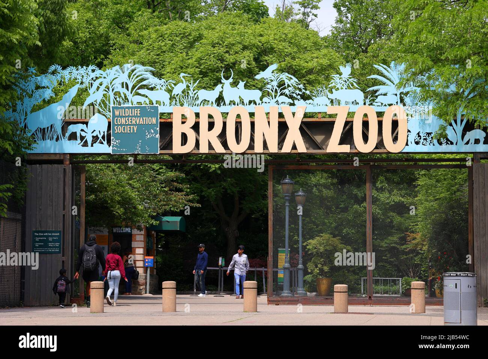

A zoo is a place where animals live in captivity and are put on display for people to view. The word “zoo” is short for “zoological park.”
Zoos contain wide varieties of animals that are native to all parts of the Earth.
Though people have kept wild animals for thousands of years, those collections have not always resembled modern zoos. The first zoos were created as private collections by the wealthy to show their power. These private collections were called menageries.
Wall carvings found in Egypt and Mesopotamia are evidence that rulers and aristocrats created menageries as early as 2500 BCE. They left records of expeditions to distant places to bring back exotic animals such as giraffes, elephants, bears, dolphins, and birds. There is evidence that ancient zoo owners hired animal handlers to make sure their animals thrived and reproduced.
Zoos also existed in later civilizations, including China, Greece, and Rome. The Aztec emperor Montezuma II, in what is today Mexico, maintained one of the earliest animal collections in the Western Hemisphere. It was destroyed by Hernan Cortes during the Spanish conquest in 1520.
The model of the modern, public zoo became popular in 18th century, during the Age of Enlightenment. The Age of Enlightenment was a period in European history when science, reason, and logic were promoted as ideals of society and government. The scientific focus of the Age of Enlightenment extended to zoology.
During this time, people started wanting to study animals for scientific reasons. Scientists wanted to research animal behavior and anatomy. To do this, scientists and zookeepers had to keep animals in places that were close to, or resembled, the animals’ natural habitats. The first modern zoo, built in 1793, opened in Paris, France. The menageries of French aristrocrats, including the king and queen, were taken by leaders of the French Revolution and relocated to the Ménagerie du Jardin des Plantes. The facility is still a busy and popular zoo in downtown Paris. Early zoos like the Menagerie du Jardin des Plantes were more like museums of living animals than natural habitats. Animals were kept in small display areas, with as many species as space would allow. Today, zoos are meant to entertain and educate the public but have a strong emphasis on scientific research and species conservation. There is a trend toward giving animals more space and recreating natural habitats. Zoos are usually regulated and inspected by the government.Urbanand Suburban Zoos
Urban zoos, located in large cities, still resemble the smaller zoos that were popular 200 years ago. Often, these zoos sit in the middle of cities, making expansion difficult. There is little room for urban zoos to grow, and many of the zoo’s buildings are historic landmarks that cannot be destroyed or redesigned. In many urban zoos, animals are kept in relatively small enclosures. Some animal activists argue that keeping animals in urban settings is cruel because of cramped conditions, noise, and pollution. Urban zoos are common in Europe, while many zoos in the United States developed as sprawling parks in suburbs outside cities. These open-range zoos give animals more territory to roam and provide more natural habitats. This popular technique of building realistic habitats is called landscape immersion. The San Diego Zoo, in southern California, is the largest zoo in the United States. It is a suburban zoo that houses more than 4,000 animals (800 different species) in its 0.4 square kilometers (100 acres). Landscape immersion divides animals into their natural habitats, such as the tundra (with reindeer and polar bears) or bamboo forest (featuring pandas.) The San Diego Zoo also includes a wild animal park, which is even more expansive (almost 8 square kilometers or 2,000 acres.) Safari Parks Larger than urban and open-range zoos, safari parks are areas where tourists can drive their own cars to see non-native wildlife living in large, enclosed areas. These attractions allow the animals more space than the small enclosures of traditional zoos. Fuji Safari Park, in Susono, Japan, offers a traditional zoo as well as a drive-through safari park. Visitors can take their own cars or one of the park’s buses. Fuji Safari Park offers night tours, so visitors can see nocturnal animals, or animals that are active at night. At the park, visitors can also feed some animals, such as lions, from bus windows. Not all parks encourage or even allow visitors to feed animals. Safari parks, especially in Europe, are often part of larger theme parks or resorts. They include golf courses and fairground attractions, such as games and rides. Game Reserves Game reserves are large swaths of land whose ecosystems and native species are protected. The protections allow animals to live and reproduce at natural rates. Animals are allowed to roam free.